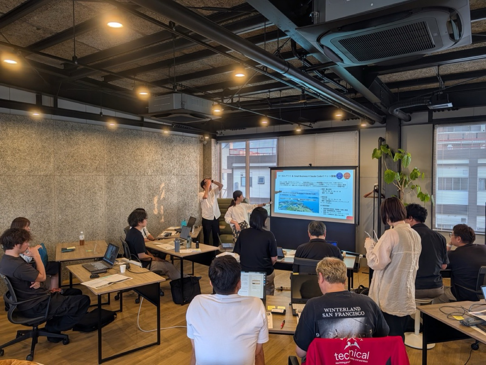
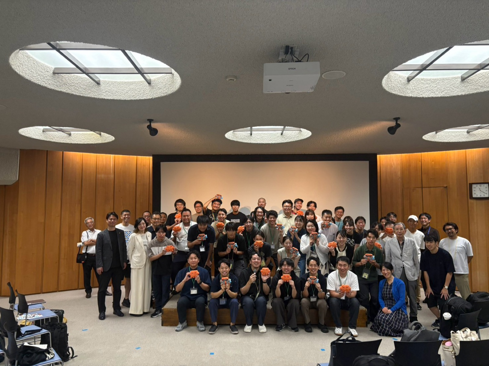
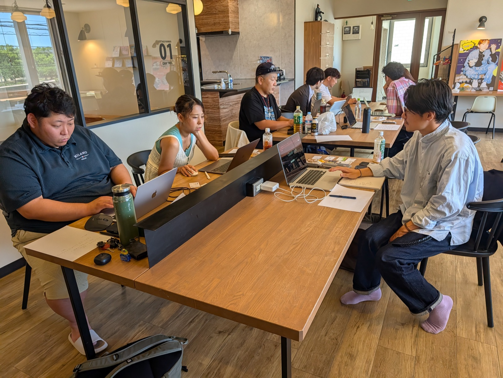
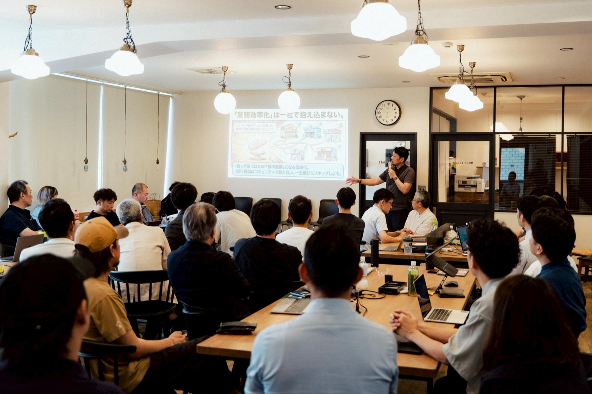

地域の事業者・学生・エンジニアが集まって、Claude Code などのエージェントAIを実際に触る勉強会やハッカソンを開いています。佐世保での月例の勉強会を軸に、いまは西九州の各地へ広がりつつあります。各回の記録です。

佐賀県鳥栖市で、地域企業の経営者・後継者・新規事業担当らが参加。3時間のうち前半は、デザイン思考の演習を実施。Claude Code を開いたのは、ターゲットの課題をワークシート上で言葉に整理できてから。身近な悩みの解決をテーマにシンプルなアプリ制作を行い、AIを使ったアプリ開発の流れを体験しました。

テーマは若者流出。大学生・地元経営者・市外のエンジニアが混成チームを組み、6チーム全部が約4時間で動くデモまで到達しました。1日を通した参加者は約80名。Anthropic Japanの2名も来場し、落合渉悟さんのトークセッションも行われました。

教わる会ではなく、全員がその場で手を動かす回。作るものの宣言に30分、制作に120分、発表に30分。役所提出書類の自動入力、営業相談の取りこぼし防止、部活の送迎当番の管理——出てきたテーマは全部、参加者自身の実務でした。終盤はそのまま、どこまでAIに触らせるかの情報交換に。

街の事業者が「自分の商売 × AI」の事例を持ち寄った回。印刷、福祉、農業、医療、酒販、広告、映像制作……参加者の半数が経営者自身で、部下に検討させるのではなく社長が自分で手を動かしていました。御朱印デザインの自動生成から、福祉法人のセキュリティ設計まで。
本AI勉強会の主催イベントではありませんが、参加者や学生が自主的に開いた企画も、情報として記録しています。
テーマは漁業・食文化・地域資源です。唐津は水産業が盛んな一方で、漁獲量はこの20年で大きく減り、藻場を守り育てる漁師の営みも経済的な評価を得にくい。そこへ地元の漁師や現場の方々を招き、その場で話を聞いてから、チームでプロトタイプまでつくって3分のピッチに臨みます。会場は2026年7月に開館した世界海洋プラスチックプランニングセンター PLAPLA（唐津市鎮西町波戸）。優勝チームには Claude Max 20x が1か月分贈られます。
お申し込みは Karatsu | Claude Code Impact Lab から。佐世保での毎月のAI勉強会も続けています。最新のイベント情報はXをご参照ください。
各レポートは当日の記録をもとに主催者が再構成したものです。個別の事例は発言者の実名を伏せています。